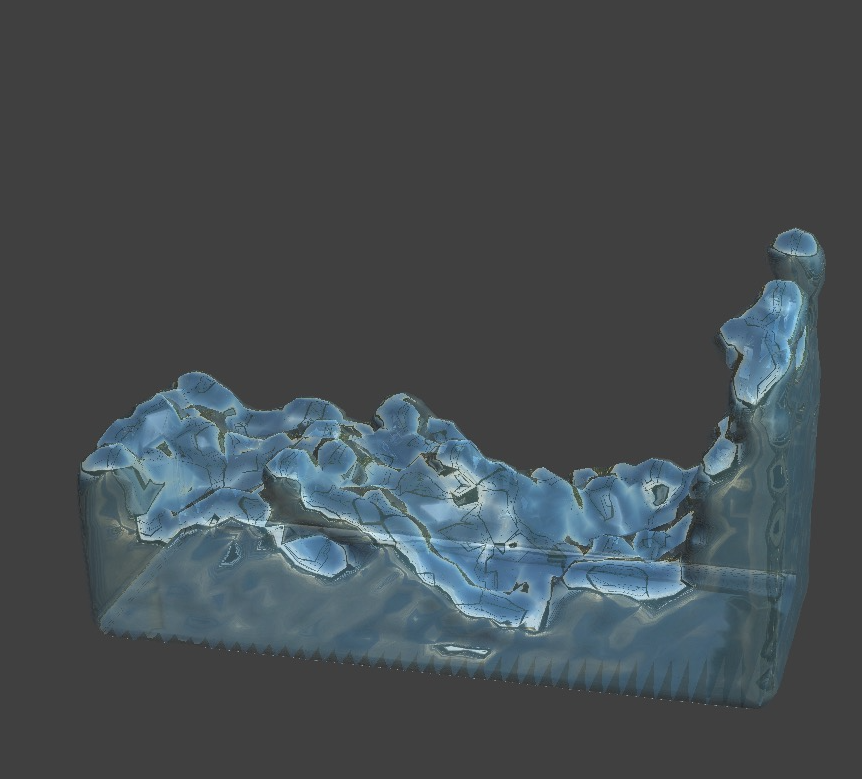

CS 184: Computer Graphics and Imaging, Spring 2023
Final Project: Particle-based Fluid and Collision Simulation with Realistic Rendering
Justin Shao, Jierui Xu, Tinna Liu, Yiwei Zhou
|  |
Abstract
Fluids, in particular liquids such as water, are responsible for many visually rich phenomena, and simulating them has been an area of long-standing interest and challenge in computer graphics. This final project focuses on the implementation of a particle-based fluid simulation and rendering system. The simulation involves computing and updating particles' positions, velocity, and forces by tracking pressure and viscosity. We utilized kernel functions, such as Poly6 and Spiky kernels, and the SPH algorithm to estimate each particle' state at each time frame. We also re-index the particle's memory position to increase cache efficiency. The rendering aspect offers four modes: particle rendering, wireframe/mesh rendering, Phong rendering, and MirrorPhong rendering. The fluid surface rendering is achieved through the marching cubes algorithm, which outputs a polygonal 3D surface mesh. This project is especially significant in providing insights into fast particle simulation and rendering techniques. Realistic water rendering has potential applications in gaming, engineering, and graphics research.
Technical Approach
We used particle-based fluid simulation, and we split the problem into two main parts: simulation and rendering. Simulation refers to the physical simulation of each fluid particle, which includes computing and updating particles' positions, velocity, and forces by tracking pressure, viscosity, and vorticity. Rendering refers to the visual rendering in GUI, which supports multiple modes including particle rendering, wireframe/mesh rendering, and Phong rendering. Thus, we will separate the discussion of our technical approach into two subsections, one for simulation and the other for rendering.
Simulation:
For our implementation, the cloth simulator (project 4) codebase served as a convenient starting point since we are implementing a particle-based Lagragian fluid simulation. We implemented the Fluid class to define fluids, which defines a fluid's behavior under the forces of gravity, pressure, and viscosity. Similar to how Cloth objects save a list of PointMasses, our Fluid objects holds a list of Particles that each represent a blob of liquid, recording information of their density, pressure, location, velocity, and forces.
Finding Neighbors:
At the beginning of each timestep, we calculate the neighbors of each particle. To do
this, we divide the space into cells of dimensions (R * R * R), and perform spatial hashing. We first build
the spatial map using the hash value of the coordinates of the cell that each particle is contained in. Then
for each particle, we find its neighbors (defined by having distance < R and not being the particle itself)
by checking the neighboring 27 cells (including the cell it resides in). These neighboring particles are
recorded within a vector
Using Kernel functions:
For the following value updates, we will use kernel functions W to estimation. These kernel functions use the distance of particles to provide a weight for how influential a particle should be towards another particle. In our simulation, we followed Muller et al. (2003) and used three different kernel functions: Poly6 kernel for density estimation, Spiky kernel for gradient, and another kernel for laplacien estimations.
\[\begin{aligned} W_{poly6}(\mathbf{x}_i - \mathbf{x}_j, R) &= \begin{cases} \frac{315}{64 \pi R^9} (R^2 - \|\mathbf{x}_i - \mathbf{x}_j\|^2)^3 & \text{if } \|\mathbf{x}_i - \mathbf{x}_j\| \leq R \\ 0 & \text{otherwise} \end{cases} \end{aligned}\]
\[\begin{aligned} \nabla W_{spiky}(\mathbf{x}_i - \mathbf{x}_j, R) &= \begin{cases} -\frac{45 (R - \|\mathbf{x}_i - \mathbf{x}_j\|)^2}{\pi R^6 \|\mathbf{x}_i - \mathbf{x}_j\|} * (\mathbf{x}_i - \mathbf{x}_j) & \text{if } \|\mathbf{x}_i - \mathbf{x}_j\| \leq R \\ 0 & \text{otherwise} \end{cases} \end{aligned}\]
\[\begin{aligned} \nabla^2 W(\mathbf{x}_i - \mathbf{x}_j, R) &= \begin{cases} \frac{45* (R - \|\mathbf{x}_i - \mathbf{x}_j\|)}{\pi R^6} & \text{if } \|\mathbf{x}_i - \mathbf{x}_j\| \leq R \\ 0 & \text{otherwise} \end{cases} \end{aligned}\]
Updating density and calculating pressure:
Using the neighborhood arrays, we update i, the density of each particle. Here we use
the standard SPH density estimator. Note that we are explicitly including the first term since the particle
itself should contribute towards the density:
\[\rho_i=m_iW(x_i-x_i,R)+\sum_{j} m_j*W(x_i-x_j,R)\]
We can then calculate the pressure at each particle using this method suggested by Muller et al (2003):
\[p_i = k(\rho_i-\rho_o)\]
Calculating forces:
With the pressure and density calculated for each particle, we can now calculate the pressure forces and viscosity forces acting on each particle. For reference, we use the pressure force estimator suggested in the SPH STAR report (2014) and the viscosity estimator suggested in Muller et al (2003). Note that for both these forces, we do not include the particle itself since the particle should not contribute to forces on itself.
-
\[f_{pressure} = m_i * \sum_{j} m_j * (\frac{p_i}{\rho_i ^ 2} + \frac{p_j}{\rho_j^2}) * \Delta W(x_i - x_j,
R)\]
\[f_{viscosity} = m_i * \sum_{j} m_j * (\frac{v_j-v_i}{\rho_j}) * \Delta^2 W(x_i - x_j, R)\]
\[f_{ext} = m_i * g\]
The total force would be: \[f_{total} = f_{pressure} + f_{viscosity} + f_{ext}\]
This force provides us with an acceleration, which allows us to perform forward integration. Note that the instability issue of forward integration is addressed by viscosity acting as a damping force:
-
\[\ddot{x}_n = \frac{f_n}{m}\]
\[\dot{x}_{n+1} = \dot{x}_n + \ddot{x}_n \Delta t\]
\[x_{n+1} = x_n + \dot{x}_n \Delta t\]
Lastly, we check for particles that cross barriers. If a particle goes through a plane, we move it to the correct side and adjust its velocity by adding a component to the direction of the plane’s normal vector with a magnitude proportional to its original velocity in that direction.
Adjustments:
- For collision checks, we initially only fixed the location of the crossing particle to be on the correct side of the plane. This resulted in the behavior where particles that next to the planes often end up "stuck" to the wall (and even more so on corners). This happened because the velocity of the particle was still making the particle pass through the plane at each timestep, and it was the position fix that created the illusion that the particle isn't moving in that direction. To fix this, we modeled the particle-plane collisions as inelastic collisions, adding the plane's normal vector (scaled by the particle's velocity in this direction) to the particle's velocity. This helps the particles break away from corners and planes, which looks alot more realistic.
Rendering
Particle Rendering:
- Since we followed the particle-based approach for fluid simulation, the first and most simple rendering approach we support is particle rendering. In our data structure design, fluid keeps track of a list of all particles, and each particle stores its current position. To render the fluid as particles, we simply upload the position of all particles to the shader, and draw the particles as GL_POINTS. We also set the point size on screen to make visualization clearer.
Wireframe, Phong, and MirrorPhong Rendering Using Marching Cubes:
- To support more realistic fluid surface rendering, we build a mesh over the fluid body using the marching cubes approach suggested by [Fleck 2008]. This approach utilizes an underlying voxel grid and outputs a polygonal 3D surface mesh. The basic idea is that we first build a 3D voxel grid over the scene. Then for each cube of the 3D grid, we calculate the intersection points with the cube by the fluid. We store the resulting triangles and normals into the input list for the shaders.
- For the surface intersection, we need to decide whether each vertex of the cube is inside or outside of the fluid, and then interpolate between vertices to find intersection points. To do this, we come up with a density function that computes the distance from a given 3D position to the closest particle. For each cube, we use this density function to compute a value for each of its vertices, and compare them to a predefined isovalue. A vertex value less than the isovalue means that the vertex lies within the fluid, and vice versa. For each edge, if one vertex is outside the fluid and the other is inside, then the edge has a cut. According to the configuration of which vertex (vertices) lies within the fluid, we check a prebuilt lookup table for one of the fifteen ways to cut the cube, as listed in Figure 1. For each edge that is cut by the surface, we linearly interpolate between the isovalue and the vertex values to calculate the intersection point. We then connect each group of three intersection points to form triangles. The union of all triangles found this way form a mesh, which is an envelope, of the fluid body.

|
- To compute the vertex normals, we use the formula: $$N_x(i,j,k)=\frac{V(i+1,j,k)-V(i-1,j,k)}{\Delta d}$$ $$N_y(i,j,k)=\frac{V(i,j+1,k)-V(i,j-1,k)}{\Delta d}$$ $$N_z(i,j,k)=\frac{V(i,j,k+1)-V(i,j,k-1)}{\Delta d}$$ Where N(i,j,k) is the cube vertex normal, V(i,j,k) is the density value at (i,j,k), and Delta d is the cube's side length.
- Finally, we export the list of triangles and the vertex normals to the wireframe shader and the Phong shader. We also built another shader called MirrorPhong which adds in some reflections sampled from a sky texture to the regular Phong result. This provides a more realistic fluid rendering effect.
- In the marching cubes implementation, we found the source code of marching cubes (including the lookup tables) from [Bourke 1994], but we needed to adapt the code to our data structure and algorithmic design. Additionally, we designed our own density function. We tried several different approaches, including counting the number of particles within a certain distance (and adjusting the distance parameter), computing the norm of an “average” vector to a few nearest surrounding particles, and computing the distance to the closest particle. We finally decided to go with the last approach because it could be implemented efficiently with the hash function for finding neighbors and it provides decent results. We also needed to adjust the grid size and the isovalue. After some experimentation, we found a combination of grid_size = 2 * particle_radius and isovalue = 3 * particle_radius gives the most natural rendering result.
Problems Encountered:
Since we build our project on top of project 4, we need to understand the workflow of the clothSimulator. At first we were not sure where to build the mesh for rendering, and how to pass the mesh to the shaders. By reading over the original main.cpp and clothSimulator.cpp, we understood where our fluid object should be initiated, how the scene was drawn to the GUI, and how different shaders are invoked. We also had problems setting the point size when rendering in particle mode, since we did not know that we needed to add and upload an additional uniform variable for point size. Another big issue we encountered was computing vertex normals. The mesh we built does not follow a halfedge data structure, and it is also very hard to find neighboring triangles given what we have since the mesh is a 3D polygon. We solved the problem by using the vertex normal formula we found in [Fleck 2008], which produces the desired result. We also had problems with C++ pointers and memory allocation, which we spent a lot of time debug using the Xcode debugger and print statements.
Lessons Learned:
- Marching cubes algorithm as a mesh-building and rendering technique for fluid.
- Effects of different rendering techniques to run time: particle rendering is the quickest, while mesh rendering is slower due to mesh re-building at every timestep.
- Importance of vertex normal to smoothness of rendered image.
Results
|
|
References
- Bernhard Fleck. Real-Time Rendering of Water in Computer Graphics
- Paul Bourke. Polygonising a scalar field
- Miles Macklin and Matthias Muller. Position Based Fluids
- Matthias Muller, Et al. Particle-Based Fluid Simulation for Interactive Applications
- Markus Ihmsen, Et al. SPH Fluids in Computer Graphics
Contributions from each team member
- Tinna Liu & Yiwei Zhou: Worked collaboratively through Zoom sessions at all times. Built data structures including fluid, particle, cube (container), gridcell (for marching cubes). Implemented fluid initialization and marching cubes algorithm for fluid mesh, and tuned marching cubes parameters. Implemented fluidSimulator on top of clothSimulator (proj. 4) to export mesh data to shaders. Modified shader files to support various rendering methods.
- Justin Shao: did research on particle based simulations, implemented simulation code under the SPH framework, helped optimize particle-boundary collisions, worked on tuning liquid parameters.
- Jierui Xu: helped debug and clarify mathematical equations of the model; implemented re-index algorithm to improve cache efficiency; focused on parameter tuning and debugging of the whole model, changing rest density, viscosity constant, stiffness constant, and density search radius to generate more realistic rendering.